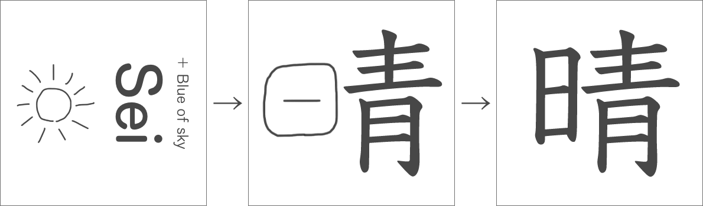
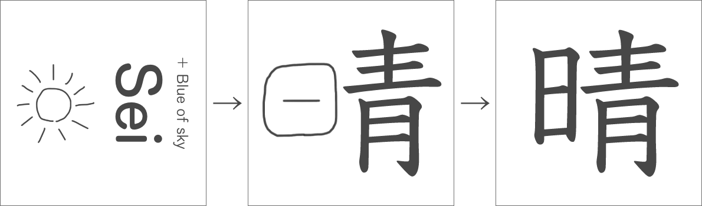
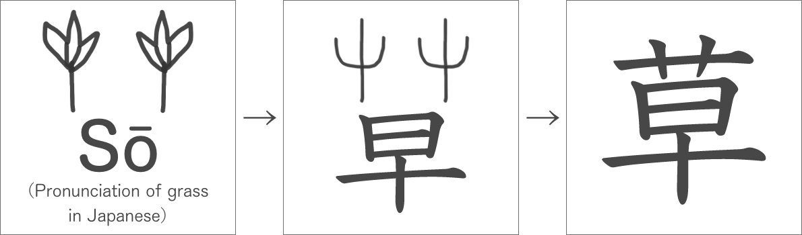
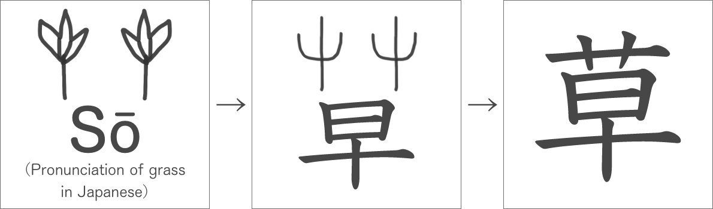
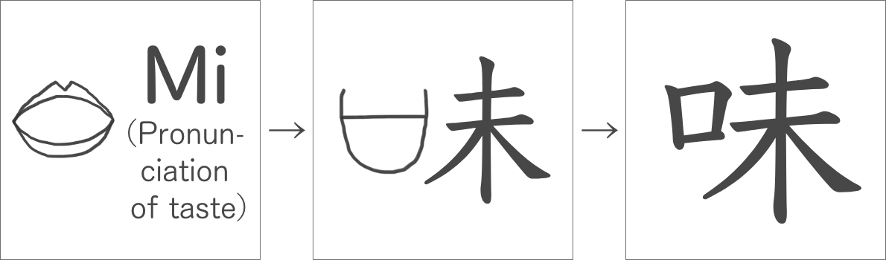
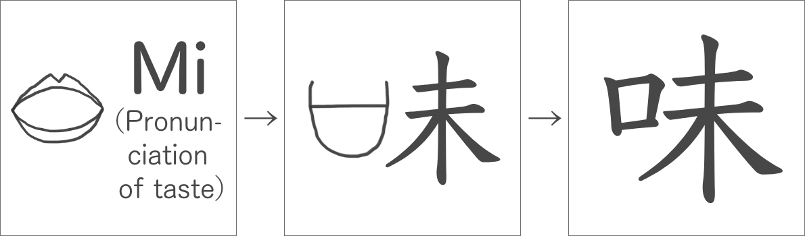

漢字の成り立ち The origin of Kanji
絵から文字へ
ずっと昔、まだ漢字がなかった頃、中国の王様は亀の甲羅の骨や牛の骨で占いをしていました。しかし、その結果を記録することができませんでした。文字がなかったからです。記録ができないと、いつまでも誰かが占いの結果を覚えていないといけません。文字がないと不便なので、中国の王様は絵を簡単にした文字を使うようにしました。それが最初の漢字、「甲骨文字」の中の「象形文字」です。元になった絵と文字が似ている甲骨文字を見てみましょう。


世界の象形文字
中国では甲骨文字ができましたが、世界でもさまざまな象形文字が出来ました。その中の一つを紹介します。「くさび形文字」です。くさび形文字は、今のイラクやシリアに住んでいたシュメール人が作った文字です。
// くさび形文字のでき方このように、くさびのような形をしています。甲骨文字と同じように最初は絵から作られました。
これで占いに使った骨に結果を記録できるようになりました。でも、このままでは目に見えないものを表す文字は作ることができません。「上」「中」「下」などです。占いの結果を記録するときも、今の文章と同じように「上」「中」「下」などを使うことがありました。そこで甲骨文字の中に足されたのが「指事文字」です。


「上」と「下」は「二」と紛らわしかったため、後から縦棒が付け足されました。
漢字パズルで文字を増やす
だいぶ漢字が増えてきましたね。それでもまだまだ足りません。実は、今使われている漢字の多くは象形文字でも指事文字でもありません。次は、絵から文字を作るのではなく、今ある文字をパズルのように組み合わせて漢字を作りました。
このようにしてできた漢字は、「会意文字」という名前で呼ばれます。会意文字は、2~3個の漢字の意味を組み合わせて新しい意味をつけた文字のことです。
「木」がたくさんある「森」、「人」が「木」の横で「休」む、のように作られます。


いろいろなところで漢字を使う時代に
これで「象形文字」「指事文字」「会意文字」が揃い、甲骨文字が完成しました。甲骨文字は約400年間使われましたが、次の書き方の「金文」が使われるようになった頃には、占いだけでなく他のことにも使われるようになっていました。すると、今ある漢字では足りなくなります。そして作られたのが「形声文字」です。意味を表す漢字と音を表す漢字を組み合わせて作られました。読みは音を表す漢字と同じですが、意味の付け方は2種類あります。1つは意味を表す漢字と同じ意味を付ける方法、もう1つは音を表す漢字と意味を表す漢字の両方の意味を混ぜて意味を付ける方法です。形声文字も漢字パズルでできた漢字です。
例えば、「銅」は、「どう（同）」と呼ばれている「金」属、という意味で、「晴」は、「せい（青）」と読み、太陽（日）が見えて空が青いときの天気、という意味を持っています。
 

 

 

より書きやすく
ここまで来てやっと漢字の完成です。でも、まだ絵のような文字なので、速く、たくさんの文字を書くのは大変でした。そのため、いろいろな工夫がされて漢字は書きやすく変わっていきました。どのように書きやすく変わってきたのでしょうか。
まず、画をつなげたり無くしたりして画数を減らし、「篆文」と呼ばれるようになりました。次は、曲線が減らされて真っ直ぐに、線が丸っこい形になりました。これが「隷書」です。そして、隷書の丸っこい形が四角く、線がもっと直線になりました。これが今使われている漢字の書き方、「楷書」です。ひらがなやアルファベットとは違って漢字がカクカクなのは、曲線を書きづらい筆でも書きやすくするためだったのです。
くさび形文字の工夫
くさび形文字も、書きやすくするための工夫がされていました。くさび形文字は粘土を尖った棒で引っ掻いて書いていたので、漢字と同じように画が真っ直ぐになりました。
// 粘土板と尖った筆の画像
漢字にはパーツがある
漢字には、ひらがなやカタカナと違ってパーツがあります。例えば、漢字の「漢」という漢字と、「流」という漢字には左側に三つの点があります。これを「さんずい」といいます。また、漢字の「字」という文字と、宇宙の「宇」という漢字には、上にカタカナのウのような形がありますね。これを「うかんむり」といいます。今は、例として「流」と「宇」の漢字を挙げましたが、そのほかにも同じ形を持つ漢字がたくさん見つかると思います。漢字では、このパーツをもとにして意味が付いたり、音（読み方）が決まったりします。これが、歴史のパートで説明した「会意文字」や「形声文字」です。このように、漢字にはパーツがたくさんあります。パーツを覚えていくと、漢字を覚えやすくなるかもしれません。
「へん」と「つくり」
今から、漢字のパーツについて説明していきます。まず、漢字をパーツごとに分解してみましょう。いろいろな分け方がありますが、左と右で分かれている漢字が多いので、左右で漢字を分けましょう。分かれた左側のパーツを「へん」、右側のパーツを「つくり」と言います。へんが同じ漢字同士は同じことについての漢字が多く、つくりが同じ漢字同士は音が同じなことが多いです。
例えば…
- 「桜」「株」「校」は、すべて「木へん」なので、同じ「木」についての文字。
- 「江」「紅」「虹」は、「工」がつくりなので、音読みはすべて「こう」。
次に、簡単でたくさん使われているへんとつくりの一覧を載せます。
へん
// 画像- 水がある地形や水の性質についての漢字にあります。
- 人や人の動きについての漢字にあります。
- 手や手を使う動きについての漢字にあります。
- 言葉や話すことについての漢字にあります。
- 木や草、木でできた道具についての漢字にあります。
- 糸や布についての漢字にあります。
つくり
// 画像- 刀や切る動きについての漢字にあります。
- 顔についての漢字にあります。
- 力を使う動きについての漢字にあります。
- 地域や集落についての漢字にあります。
いろいろな漢字の分け方
先ほどのへんとつくりの説明では、漢字は左と右に分かれていることが多いと書きましたが、他にもたくさんの分け方があります。上と下に分かれると「かんむり」と「あし」と言います。他にも何個か名前がついているので、みなさんも聞いたことがある名前があるかもしれません。
// 「たれ」、「門構え」などの一覧